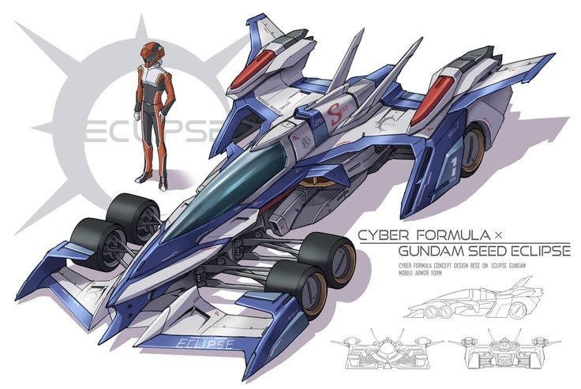
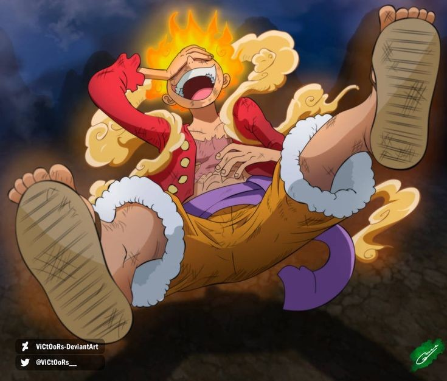

[Birth Date] - [Passing Date]

[Name] in [Year/Location]
አቶ ኡርጌሳ ዋኬኔ ደበሎ ከአርበኛው አባታቸው ከዋኬኔ ደበሎ እና ከእናታቸው ከወ/ሮ ኢፍቱ ፉሪ ሚያዝያ 5 ቀን 1933 ዓ.ም በቀድሞ አጠራሩ በሸዋ ጠቅላይ ግዛት በጨቦና ጉራጌ አውራጃ አጨበር ልዩ ስሙ የጠጠር ተብሎ በሚጠራ ቦታ ተወለዱ፡፡
የወቅቱ መንግስት ፔፕሲ ኮላ ድርጅትን በመውረስ 20/45 የሚል አሰራር በማምጣት ሠራተኞችን ጡረታ ማውጣት ሲጀምር፣ አዳዲስ ሐሳቦችን የመፍጠርና የመተግበር ልዩ የሆነ ችሎታ የነበራቸው አቶ ኡርጌሳ የመኪና ባለንብረቶችን በማሰባሰብ ብርሃን የጭነት ማመላለሻ ማህበር በሚል የሰየሙትን ማህበር የመሠረቱ ሲሆን፣ ይህንንም ማህበር የቦርድ ሊቀመንበር ሆነው መርተዋል፡፡ይህንን ማህበር ደርግ ወርሶ ጭማድ በሚል ስያሜ እንዲቀጥል ሲያደርገው ድርጅቱ ውጤታማ እንዲሆን አቶ ኡርጌሳን ማምጣት ተገቢ መሆኑን በመገንዘቡ ለአቶ ኡርጌሳ ጥያቄ በማቅረብ ድርጅቱን እንዲቀላቀሉ አድርጓቸዋል፡፡
ይህንንም ድርጅት በየጊዜው የቦርዱ አባላት ከነበሩት ከእነኮሎኔል ጎሹ ወልዴ፣ ኢንጅነር ካሣ ገብሬ፣ ካሣ ተሰማ እና ሌሎች ጋር በመሆን ከቀጠና ኃላፊ እስከ መምሪያ ኃላፊ በመሆን ጡረታ ጠይቀው እስከ ወጡበት እስከ 1986 ዓ.ም ድረስ አገልግለዋል፡፡ በትራንስፖርቱ ዘርፍ በነበራቸው አገልግሎትም የውይይት ታክሲን ሐሳብ አፍልቀው ወደሥራ ማስገባትን ጨምሮ አሠራሮችን በማዘመን እና አዳዲስ አሠራሮችን በመተግበር ተጠቃሽ ታሪክን ጽፈዋል፡፡ እንዲሁም አቶ ኡርጌሳ ዋኬኔ የከፍተኛ 24 የቀበሌ 11 የመጀመሪያው ሊቀመንበር በመሆን አገልግለዋል፡፡ በዚህም የአገልግሎት ዘመናቸው በርካቶች የቀበሌ ቤትና ቤት መስሪያ ቦታዎችን እንዲያገኙ ከማገዛቸውም በተጨማሪ፣ ለነዋሪው ትምህርት ቤቶችን ገንብተዋል፡፡ የቀበሌው ነዋሪዎችም የተሻለ አገልግሎት እንዲያገኙ የበኩላቸውን አድርገዋል፡፡
አቶ ኡርጌሳ ዋኬኔ የግል ቢዝነሳቸውን የጀመሩት በቀዳማዊ ኃይለ ሥላሴ መንግስት አምቦ ውሃን በማከፋፈል ሲሆን፣ በወቅቱ እሳቸው የመንግስት ሠራተኛ በመሆናቸውና ሥራንም እንዳይበድሉ በማሰብ ታናናሽ ወንድሞቻቸውን በሥራው ላይ በማሳተፍ ነበር፡፡ በዚህም አብሯቸው የሚሰራውን ድርጅትና ደንበኞችን በማርካታቸው በምስራቁ የሀገራችን ክፍል ብቸኛው የአምቦ ውሃ እና የፔፕሲ ኮላ ወኪል እንዲሆኑ አድርጓል፡፡ አቶ ኡርጌሳ በኋላም ሥራቸውን በማስፋፋት፣ የህዝብ ትራንስፖርት መኪኖችን በመግዛት በዘርፉ የተሰማሩ ሲሆን፣ በዚህም ውጤታማ የሆነ አገልግሎት ሰጥተዋል፡፡ በኋላም፣ እጅግ በሚወዷቸውና ሩቅ አሳቢ ነበር በሚሏቸው በአባታቸው በዋኬኔ ስም የሰየሙትን የንግድ አገልግሎት መስጫ ተቋም የመሰረቱ ሲሆን፣ ይህም አዋጪ የቢዝነስ ተቋም ሆኖ አገልግሎት በመስጠት ላይ ይገኛል፡፡ በልዩ ልዩ ባንኮች እና የአክሲዎን ቢዝነሶችም ውስጥም ባደረጓቸው ተሳትፎዎች አዋጪ ውጤቶችን አስመዝግበዋል፡፡ በንግዱ መስክ በስመዘገቧቸው ውጤቶችም ለተከታታይ ዓመታት በከፍተኛ ደረጃ ተሸልመዋል፡፡ አቶ ኡርጌሳ የሰው ልጅ ከፈጣሪው የተሰጠው መብቱ ተከብሮለት ሊኖር ይገባል የሚል የጸና እምነት የነበራቸው በመሆኑ፣ ለዚሁ ለመታገል ከወጣትነታቸው ጀምሮ እስካሁንም ድረስ በተለያዩ የፖለቲካ ፓርቲዎች ውስጥ በመሳተፍ የነቃ ትግል አድርገዋል፡፡ በዚህም በሜጫና ቱለማ ማህበር አባል፣ የሶዶ ጂዳ የፖለቲካ ድርጅት መስራችና ዋና ጸሐፊ፣ የኦሮሞ ፌዴራላዊ ኮንግረንስ (ኦፌኮ) መስራችና ከፍተኛ አመራር እንዲሁም የኦሮሞ ነጻነት ግንባር (ኦነግ) አባል በመሆን ለሰው ልጅ መብትና ዲሞክራሲ ታግለዋል፡፡

Early years, [Year]
With family, [Year]
With family, [Year]
With family, [Year]
With family, [Year]
ሰው ያልፋል ግን ለወገኑ የማያልፍ ነገር መስራት አለበት፡፡ የሚለውን የህይወት ፍልስፍናቸው አድርገው የያዙት አቶ ኡርጌሳ በሰሩባቸው ተቋማትና በግል ቢዝነሶቻቸው ለሀገር ካበረከቷቸው አገልግሎቶች በተጨማሪ ለትውልድ አካባቢያቸው ዜጎችን ተጠቃሚ የሚያደርጉ በርካታ ሥራዎችን ሠርተዋል፡፡ ከእነዚህም ለአብነት፡- ከቱሉ ቦሎ እስከ አጨበር ያለውን መንገድ በመቀየስ አስተባብረው እንዲሠራ አድርገዋል፡፡ የድልድዮች ግባታና የውሃ መስመሮች እንዲዘረጉ ሠርተዋል፡፡ በአካባቢው ለሚገኙ የአንደኛ እና የሁለተና ደረጃ ትምህርት ቤቶች በየጊዜው ድጋፍ ከማድረጋቸው በተጨማሪ በትምህርት ቤቶቹ ከፍተኛ ውጤት ያመጡትን ተማሪዎች በመሸለምና የከፍተኛ ትምህርት ወጪያቸውን በማገዝ ከፍተኛ ድጋፍ አድርገዋል፡፡ በዚህም ለአካባቢው ነዋሪዎች አርአያ ሆነዋል፡፡ አቶ ኡርጌሳ በ1958 ዓ.ም ከወ/ሮ ቀለሟ ተሰማ ጋር ትዳር የመሠረቱ ሲሆን፣ ከዚህም ምስጉንና ተጠቃሽ የትዳር ሕይወት 9 ልጆችን እና 13 የልጅ ልጆችን አፍርተዋል፡፡ ልጆቻቸውንም በስነምግባርና በዕውቀት አሳድገው ለቁም ነገር አብቅተዋል፡፡ ከዚህ በተጨማሪ ታናናሽ ወንድሞቻቸውን እና እህቶቻቸውን አስተምረዋል፡፡ በርካታ የዘመድ ልጆችንም አሳድገውና አስተምረው ለፍሬ እንዲበቁ አድርገዋል፡፡
አቶ ኡርጌሳ በማህበራዊ ሕይወታቸው ከፍተኛ ክብርና ሞገስ የተቸራቸው የሀገርና የማህበረሰብ ሽማግሌ ነበሩ፡፡ በባህሪያቸውም ግልጽ፣ ቀጥተኛና ለማንም የማያደሉ ሚዛናዊ፣ ሁሉንም እኩል የሚመለከቱ፣ ያመኑበትን ፊት ለፊት የሚናገሩና የሚፈጽሙ አባት ነበሩ፡፡ ለማወቅም ከነበራቸው ከፍተኛ ጉጉት የተነሳ በየቀኑ ሰዓት ሰጥተው የሚያነቡ፣ አዳዲስና ጠቃሚ ሐሳብ አላቸው ከሚሏቸው ሰዎች ጋር የሚወያዩ፣ ሁሌም መጠየቅን የሚወዱ፣ የሚያውቁትን የሚያካፍሉ፣ ታሪክ አዋቂ፣ እጅግ ትሁትና ታላቅ አባት ነበሩ፡፡ ሆኖም ምንጊዜም የሰው ልጅ ከዓለም ውጣ ውረድ ያርፍ ዘንድ ወደ ፈጣሪው መጠራቱ የእግዚአብሔር አሠራር በመሆኑ፣ እኝህ ታላቅና ለብዙዎች ከለላ ሆነው የኖሩት አባታችን ባደረባቸው ህመም በህክምና ሲረዱ ቆይተው ግንቦት 24 ቀን 2015 ዓ.ም ከዚህ አለም ድካም አርፈዋል፡፡ ቀብራቸውም ዛሬ ግንቦት 25 ቀን ከቀኑ በ8፡00 በረጲ ጎልጎታ መድሐኒያለም ቤተ ክርስቲያን ተፈጽሟል፡፡
[Name] in later years